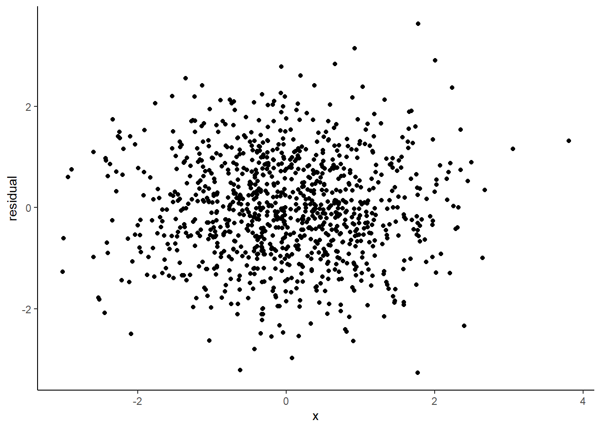

library(foreach)
library(magrittr)
library(modelsummary)
library(ggplot2)
library(kableExtra)Programming in R and Reporting in Quarto
- Submit both qmd and HTML files in GitHub.
- Name the files as
0_studentid_firstname_familyname.qmdand0_studentid_firstname_familyname.htmlwith all lower case letters. - Replicate the following code in Rmarkdown file and generate an HTML report.
- Load packages
- Simulate data. Check how to use
tibbleto make dataframe and how to usemodelsummaryto generate a summary table.
N <- 1000
beta <- 0.5
set.seed(1)
df <-
tibble::tibble(
i = 1:N,
x = rnorm(N),
y = x * beta + rnorm(N)
)
df %>%
modelsummary::datasummary_skim()| Unique (#) | Missing (%) | Mean | SD | Min | Median | Max | ||
|---|---|---|---|---|---|---|---|---|
| i | 1000 | 0 | 500.5 | 288.8 | 1.0 | 500.5 | 1000.0 | ![]() |
| x | 1000 | 0 | −0.0 | 1.0 | −3.0 | −0.0 | 3.8 | ![]() |
| y | 1000 | 0 | −0.0 | 1.2 | −3.6 | −0.0 | 4.5 | ![]() |
- Run an ordinary least squares regression. Check how to use
lmto run the basic regression analysis and usemodelsummarypackage to display the estimation results.
result <-
df %>%
lm(
data = .,
formula = y ~ -1 + x
)
result %>%
modelsummary()| (1) | |
|---|---|
| x | 0.507 |
| (0.032) | |
| Num.Obs. | 1000 |
| R2 | 0.203 |
| R2 Adj. | 0.202 |
| AIC | 2919.5 |
| BIC | 2929.3 |
| Log.Lik. | −1457.742 |
| RMSE | 1.04 |
- Plot the residuals. Check how to use
ggplot2package for plotting.
df %>%
dplyr::mutate(
e = result$residuals
) %>%
ggplot(
aes(
x = x,
y = e
)
) +
geom_point() +
labs(
x = "x",
y = "residual"
) +
theme_classic()
- Manually estimate the parameter. Check how to perform matrix operations.
x <- df %>%
dplyr::pull(x) %>%
as.matrix()
y <- df %>%
dplyr::pull(y) %>%
as.matrix()
b <-
solve(crossprod(x, x), crossprod(x, y))
sigma <-
result$residuals %>%
sd()
b_se <-
sigma^2 * solve(crossprod(x, x)) %>%
sqrt()
data.frame(
"Estimate" = b,
"Standard error" = b_se
) %>%
kbl() %>%
kable_styling()| Estimate | Standard.error |
|---|---|
| 0.5066087 | 0.0330612 |
- Wrapp this into a function. Chekc how to define and use functions.
simulate_and_estimate <-
function(N, seed) {
set.seed(seed)
df <-
tibble::tibble(
i = 1:N,
x = rnorm(N),
y = x * beta + rnorm(N)
)
result <-
df %>%
lm(
data = .,
formula = y ~ x
)
return(
list(
df = df,
result = result
)
)
}
output <- simulate_and_estimate(N = 1000, seed = 1)
output$df %>%
modelsummary::datasummary_skim()| Unique (#) | Missing (%) | Mean | SD | Min | Median | Max | ||
|---|---|---|---|---|---|---|---|---|
| i | 1000 | 0 | 500.5 | 288.8 | 1.0 | 500.5 | 1000.0 | |
| x | 1000 | 0 | −0.0 | 1.0 | −3.0 | −0.0 | 3.8 | |
| y | 1000 | 0 | −0.0 | 1.2 | −3.6 | −0.0 | 4.5 | |
output$result %>%
modelsummary()| (1) | |
|---|---|
| (Intercept) | −0.016 |
| (0.033) | |
| x | 0.506 |
| (0.032) | |
| Num.Obs. | 1000 |
| R2 | 0.203 |
| R2 Adj. | 0.202 |
| AIC | 2921.2 |
| BIC | 2936.0 |
| Log.Lik. | −1457.621 |
| RMSE | 1.04 |
- Loop over operations. Check out
purrrpackages work.
output <- list()
for (i in 1:10) {
output_i <- simulate_and_estimate(N = 1000, seed = i)
output[[i]] <- output_i
}
output <-
foreach (i = 1:10) %do% {
output_i <- simulate_and_estimate(N = 1000, seed = i)
return(output_i)
}
f <-
function(i) {
output_i <- simulate_and_estimate(N = 1000, seed = i)
return(output_i)
}
output_list <-
1:10 %>%
purrr::map(
.,
f
)
output_list <-
1:10 %>%
purrr::map(
.,
function(x) {
x <- x + 2
x <- x * 2
return(x)
}
)
output_list <-
1:10 %>%
purrr::map(
.,
~ simulate_and_estimate(N = 1000, seed = .)
)
output_list %>%
purrr::map(~ .$result) %>%
modelsummary()| (1) | (2) | (3) | (4) | (5) | (6) | (7) | (8) | (9) | (10) | |
|---|---|---|---|---|---|---|---|---|---|---|
| (Intercept) | −0.016 | 0.019 | −0.020 | 0.025 | 0.073 | 0.001 | 0.019 | 0.023 | −0.011 | 0.015 |
| (0.033) | (0.031) | (0.032) | (0.032) | (0.031) | (0.031) | (0.032) | (0.032) | (0.031) | (0.033) | |
| x | 0.506 | 0.533 | 0.472 | 0.527 | 0.518 | 0.486 | 0.528 | 0.469 | 0.433 | 0.547 |
| (0.032) | (0.031) | (0.032) | (0.033) | (0.031) | (0.031) | (0.033) | (0.031) | (0.033) | (0.033) | |
| Num.Obs. | 1000 | 1000 | 1000 | 1000 | 1000 | 1000 | 1000 | 1000 | 1000 | 1000 |
| R2 | 0.203 | 0.229 | 0.183 | 0.208 | 0.218 | 0.197 | 0.205 | 0.184 | 0.150 | 0.213 |
| R2 Adj. | 0.202 | 0.228 | 0.182 | 0.207 | 0.217 | 0.196 | 0.204 | 0.183 | 0.149 | 0.212 |
| AIC | 2921.2 | 2829.8 | 2836.5 | 2837.6 | 2827.8 | 2825.5 | 2887.0 | 2863.4 | 2821.4 | 2927.1 |
| BIC | 2936.0 | 2844.5 | 2851.2 | 2852.3 | 2842.5 | 2840.2 | 2901.7 | 2878.1 | 2836.1 | 2941.8 |
| Log.Lik. | −1457.621 | −1411.892 | −1415.237 | −1415.778 | −1410.897 | −1409.738 | −1440.497 | −1428.701 | −1407.690 | −1460.539 |
| RMSE | 1.04 | 0.99 | 1.00 | 1.00 | 0.99 | 0.99 | 1.02 | 1.01 | 0.99 | 1.04 |